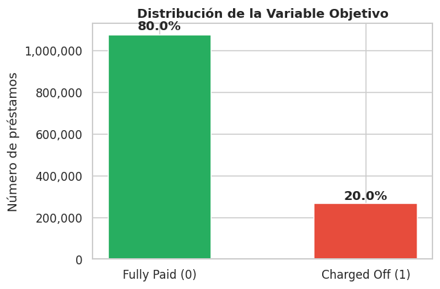
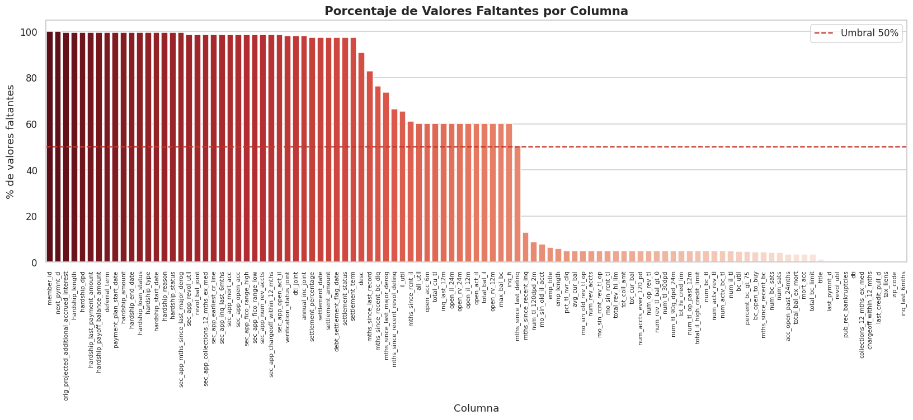
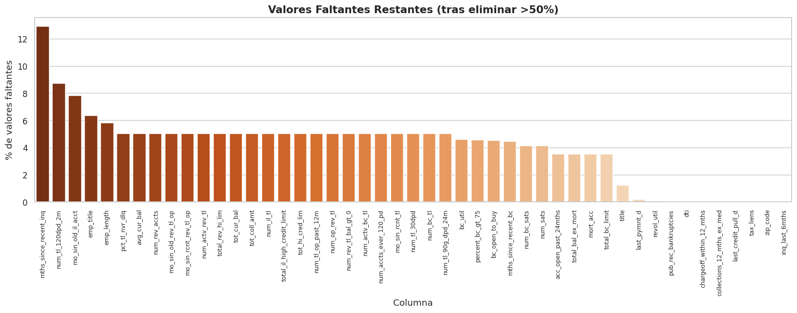
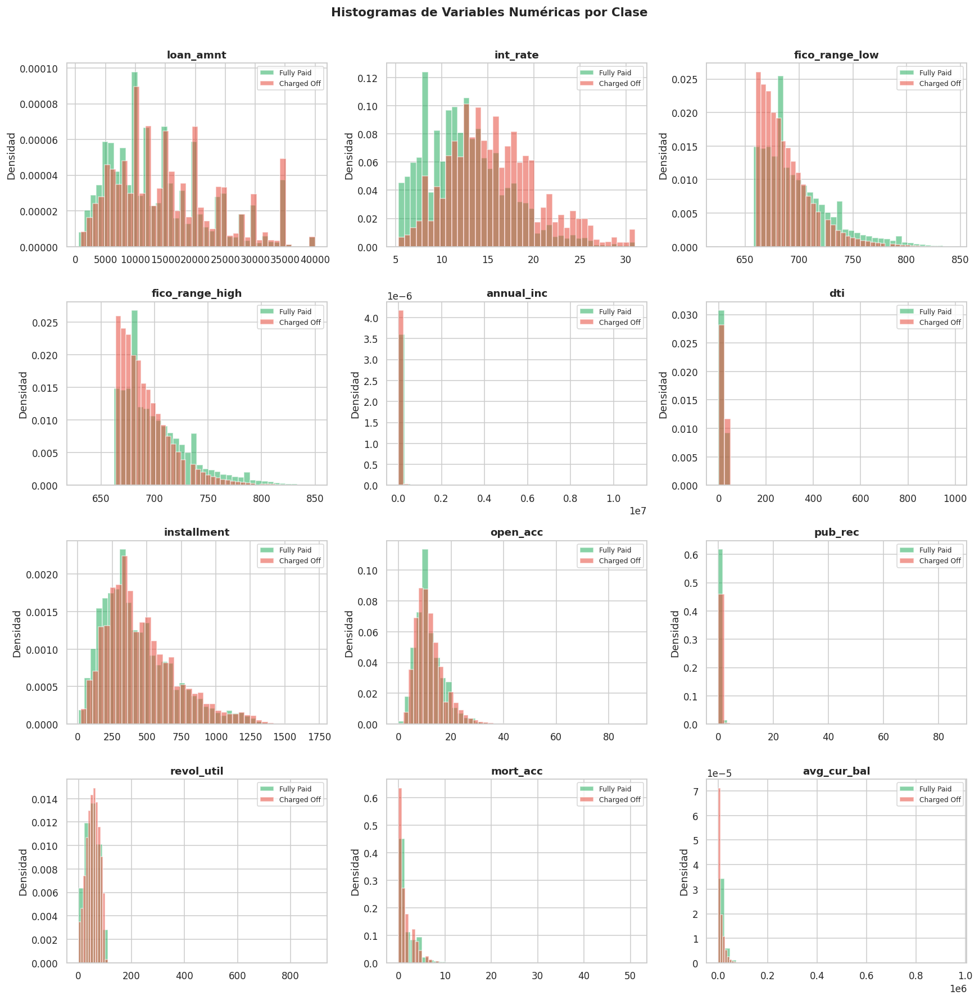
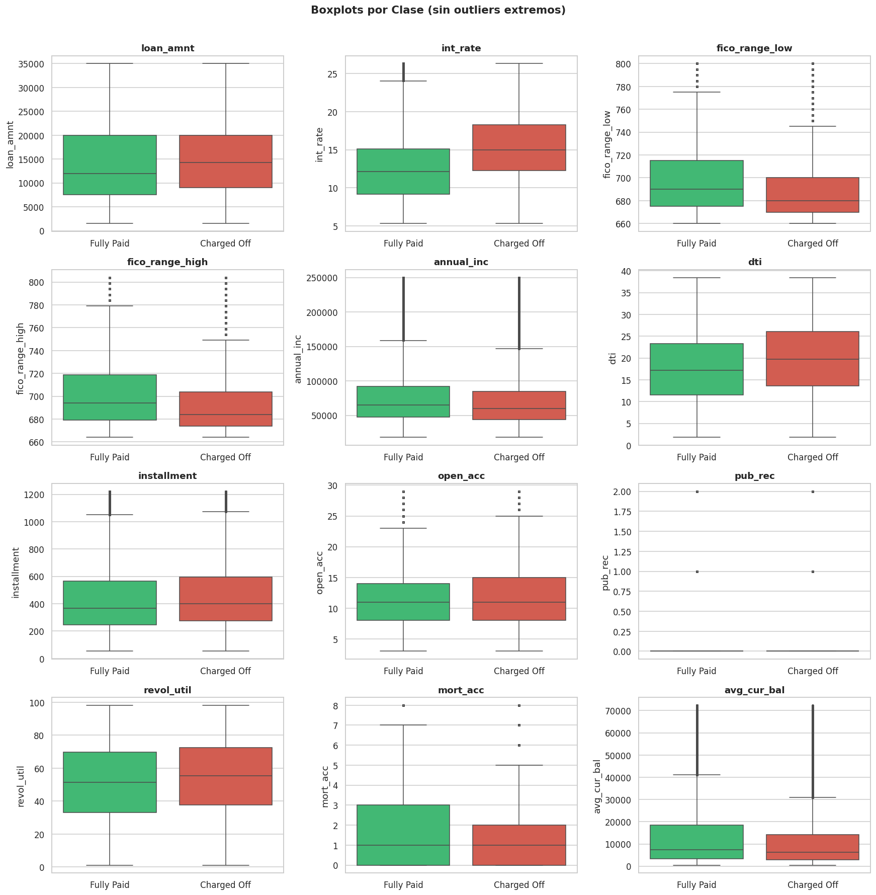
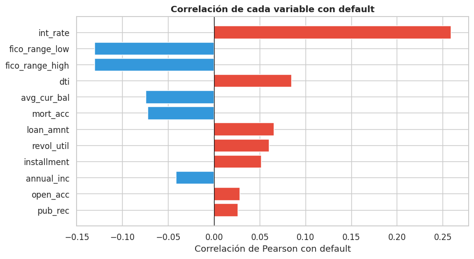
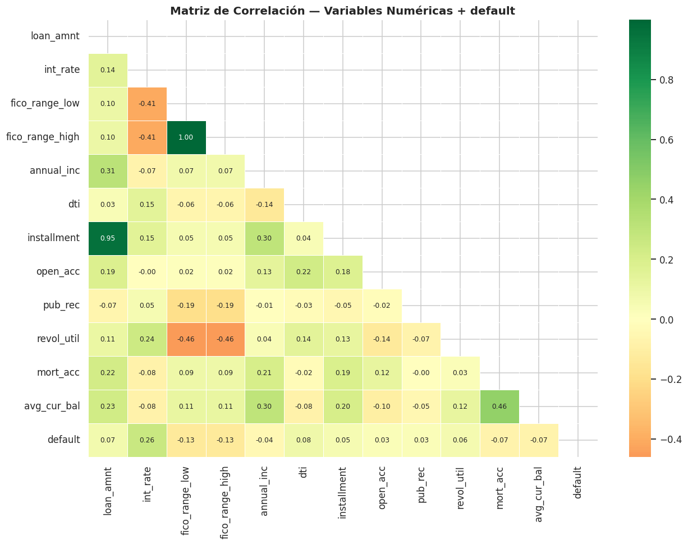

Exploración de Datos (EDA)#
Librerías#
import pandas as pd
import numpy as np
import matplotlib.pyplot as plt
import matplotlib.ticker as mticker
import seaborn as sns
import math
import warnings
from sklearn.impute import SimpleImputer
warnings.filterwarnings('ignore')
plt.rcParams['figure.dpi'] = 110
sns.set_theme(style='whitegrid')
Carga del Dataset#
CSV_PATH = 'datos/accepted_2007_to_2018Q4.csv'
df_raw = pd.read_csv(CSV_PATH, low_memory=False)
print(f'Filas : {df_raw.shape[0]:,}')
print(f'Columnas: {df_raw.shape[1]:,}')
df_raw.head(3)
Filas : 2,260,701
Columnas: 151
| id | member_id | loan_amnt | funded_amnt | funded_amnt_inv | term | int_rate | installment | grade | sub_grade | ... | hardship_payoff_balance_amount | hardship_last_payment_amount | disbursement_method | debt_settlement_flag | debt_settlement_flag_date | settlement_status | settlement_date | settlement_amount | settlement_percentage | settlement_term | |
|---|---|---|---|---|---|---|---|---|---|---|---|---|---|---|---|---|---|---|---|---|---|
| 0 | 68407277 | NaN | 3600.0 | 3600.0 | 3600.0 | 36 months | 13.99 | 123.03 | C | C4 | ... | NaN | NaN | Cash | N | NaN | NaN | NaN | NaN | NaN | NaN |
| 1 | 68355089 | NaN | 24700.0 | 24700.0 | 24700.0 | 36 months | 11.99 | 820.28 | C | C1 | ... | NaN | NaN | Cash | N | NaN | NaN | NaN | NaN | NaN | NaN |
| 2 | 68341763 | NaN | 20000.0 | 20000.0 | 20000.0 | 60 months | 10.78 | 432.66 | B | B4 | ... | NaN | NaN | Cash | N | NaN | NaN | NaN | NaN | NaN | NaN |
3 rows × 151 columns
Variable Objetivo: default#
df = df_raw[df_raw['loan_status'].isin(['Fully Paid', 'Charged Off'])].copy()
df['default'] = df['loan_status'].apply(lambda x: 1 if x == 'Charged Off' else 0)
df = df.drop(columns='loan_status')
counts = df['default'].value_counts()
pcts = df['default'].value_counts(normalize=True) * 100
print(f' Registros tras filtrado: {len(df):,}')
print(f' Fully Paid (0): {counts[0]:,} ({pcts[0]:.1f}%)')
print(f' Charged Off (1): {counts[1]:,} ({pcts[1]:.1f}%)')
Registros tras filtrado: 1,345,310
Fully Paid (0): 1,076,751 (80.0%)
Charged Off (1): 268,559 (20.0%)
fig, ax = plt.subplots(figsize=(6,4))
# Barras
bars = ax.bar(['Fully Paid (0)', 'Charged Off (1)'], counts.values,
color=['#27ae60', '#e74c3c'], edgecolor='white', width=0.5)
for bar, pct in zip(bars, pcts.values):
ax.text(bar.get_x() + bar.get_width()/2, bar.get_height() * 1.01,
f'{pct:.1f}%', ha='center', va='bottom', fontweight='bold')
ax.set_title('Distribución de la Variable Objetivo', fontweight='bold')
ax.set_ylabel('Número de préstamos')
ax.yaxis.set_major_formatter(mticker.FuncFormatter(lambda x, _: f'{int(x):,}'))
plt.tight_layout()
plt.savefig('eda_01_target.png', bbox_inches='tight')
plt.show()

La variable default presenta un desequilibrio significativo:
Clase mayoritaria (0 — Fully Paid): ~80% de los registros.
Clase minoritaria (1 — Charged Off): ~20% de los registros.
Este desbalance debe tenerse en cuenta al entrenar el modelo.
Tipos de Datos y Valores Faltantes#
Tipos de datos#
type_summary = df.dtypes.value_counts().rename_axis('Tipo').reset_index(name='Cantidad')
print("Distribución de tipos de datos:")
print(type_summary.to_string(index=False))
Distribución de tipos de datos:
Tipo Cantidad
float64 113
object 37
int64 1
Diagnóstico de valores faltantes#
missing_pct = (df.isnull().sum() / len(df) * 100)
missing_pct = missing_pct[missing_pct > 0].sort_values(ascending=False)
print(f'Columnas con valores faltantes: {len(missing_pct)} de {df.shape[1]}')
missing_pct.head(20)
Columnas con valores faltantes: 105 de 151
member_id 100.000000
next_pymnt_d 100.000000
orig_projected_additional_accrued_interest 99.720585
hardship_length 99.572292
hardship_dpd 99.572292
hardship_last_payment_amount 99.572292
hardship_payoff_balance_amount 99.572292
deferral_term 99.572292
payment_plan_start_date 99.572292
hardship_amount 99.572292
hardship_end_date 99.572292
hardship_loan_status 99.572292
hardship_type 99.572292
hardship_start_date 99.572292
hardship_reason 99.572292
hardship_status 99.572292
sec_app_mths_since_last_major_derog 99.506062
sec_app_revol_util 98.639570
revol_bal_joint 98.615263
sec_app_collections_12_mths_ex_med 98.615189
dtype: float64
plt.figure(figsize=(15, 7))
sns.barplot(x=missing_pct.index, y=missing_pct.values,
hue=missing_pct.index, palette='Reds_r', legend=False)
plt.axhline(50, color='#c0392b', linestyle='--', linewidth=1.5, label='Umbral 50%')
plt.title('Porcentaje de Valores Faltantes por Columna', fontsize=14, fontweight='bold')
plt.xlabel('Columna')
plt.ylabel('% de valores faltantes')
plt.xticks(rotation=90, fontsize=7)
plt.legend()
plt.tight_layout()
plt.savefig('eda_02_missing_before.png', bbox_inches='tight')
plt.show()

Eliminar columnas con más del 50% de nulos#
threshold = 0.50
missing_ratio = df.isnull().sum() / len(df)
cols_to_drop = missing_ratio[missing_ratio > threshold].index
df = df.drop(columns=cols_to_drop)
print(f'Columnas eliminadas (>{int(threshold*100)}% nulos): {len(cols_to_drop)}')
print(f'Columnas restantes: {df.shape[1]}')
Columnas eliminadas (>50% nulos): 58
Columnas restantes: 93
missing_pct2 = (df.isnull().sum() / len(df) * 100)
missing_pct2 = missing_pct2[missing_pct2 > 0].sort_values(ascending=False)
print(f'Columnas con nulos restantes: {len(missing_pct2)}')
plt.figure(figsize=(15, 6))
sns.barplot(x=missing_pct2.index, y=missing_pct2.values,
hue=missing_pct2.index, palette='Oranges_r', legend=False)
plt.title('Valores Faltantes Restantes (tras eliminar >50%)', fontsize=14, fontweight='bold')
plt.xlabel('Columna')
plt.ylabel('% de valores faltantes')
plt.xticks(rotation=90, fontsize=8)
plt.tight_layout()
plt.savefig('eda_03_missing_after.png', bbox_inches='tight')
plt.show()
Columnas con nulos restantes: 47

Imputación de variables categóricas#
cat_cols = df.select_dtypes(include=['object']).columns
missing_cat = df[cat_cols].isnull().sum()
missing_cat = missing_cat[missing_cat > 0]
print('Datos faltantes en variables categóricas:')
print(missing_cat.to_string())
Datos faltantes en variables categóricas:
emp_title 85785
emp_length 78511
title 16660
zip_code 1
last_pymnt_d 2313
last_credit_pull_d 55
df_imp = df.copy()
cols_unknown = [c for c in ['emp_title', 'title', 'zip_code',
'last_pymnt_d', 'last_credit_pull_d'] if c in df_imp.columns]
for col in cols_unknown:
df_imp[col] = df_imp[col].fillna('Unknown')
print(f' Imputadas con "Unknown": {cols_unknown}')
Imputadas con "Unknown": ['emp_title', 'title', 'zip_code', 'last_pymnt_d', 'last_credit_pull_d']
if 'emp_length' in df_imp.columns:
df_imp['emp_length'] = (df_imp['emp_length']
.replace('10+ years', '10')
.replace('< 1 year', '0')
.str.replace(' years', '', regex=False)
.str.replace(' year', '', regex=False))
df_imp['emp_length'] = pd.to_numeric(df_imp['emp_length'], errors='coerce')
mediana_emp = df_imp['emp_length'].median()
df_imp['emp_length'] = df_imp['emp_length'].fillna(mediana_emp)
print(f'emp_length convertida a numérico — mediana imputada: {mediana_emp}')
print(df_imp['emp_length'].value_counts().sort_index().to_string())
emp_length convertida a numérico — mediana imputada: 6.0
emp_length
0.0 108061
1.0 88494
2.0 121743
3.0 107597
4.0 80556
5.0 84154
6.0 141244
7.0 59624
8.0 60701
9.0 50937
10.0 442199
Imputación de variables numéricas#
num_cols = df_imp.select_dtypes(include=['number']).columns
missing_num = df_imp[num_cols].isnull().sum()
missing_num = missing_num[missing_num > 0]
print('Datos faltantes en variables numéricas:')
print(missing_num.to_string())
Datos faltantes en variables numéricas:
dti 374
inq_last_6mths 1
revol_util 857
collections_12_mths_ex_med 56
tot_coll_amt 67527
tot_cur_bal 67527
total_rev_hi_lim 67527
acc_open_past_24mths 47281
avg_cur_bal 67549
bc_open_to_buy 61143
bc_util 61912
chargeoff_within_12_mths 56
mo_sin_old_il_acct 105575
mo_sin_old_rev_tl_op 67528
mo_sin_rcnt_rev_tl_op 67528
mo_sin_rcnt_tl 67527
mort_acc 47281
mths_since_recent_bc 60221
mths_since_recent_inq 174071
num_accts_ever_120_pd 67527
num_actv_bc_tl 67527
num_actv_rev_tl 67527
num_bc_sats 55841
num_bc_tl 67527
num_il_tl 67527
num_op_rev_tl 67527
num_rev_accts 67528
num_rev_tl_bal_gt_0 67527
num_sats 55841
num_tl_120dpd_2m 117401
num_tl_30dpd 67527
num_tl_90g_dpd_24m 67527
num_tl_op_past_12m 67527
pct_tl_nvr_dlq 67681
percent_bc_gt_75 61555
pub_rec_bankruptcies 697
tax_liens 39
tot_hi_cred_lim 67527
total_bal_ex_mort 47281
total_bc_limit 47281
total_il_high_credit_limit 67527
imputer = SimpleImputer(strategy='median')
df_imp[num_cols] = imputer.fit_transform(df_imp[num_cols])
total_nulos = df_imp.isnull().sum().sum()
print(f' Imputación con mediana completada')
print(f' Nulos restantes en el dataset: {total_nulos}')
Imputación con mediana completada
Nulos restantes en el dataset: 0
Selección de Variables#
NUM_COLS = [c for c in ['loan_amnt', 'int_rate', 'fico_range_low', 'fico_range_high',
'annual_inc', 'dti', 'installment', 'open_acc',
'pub_rec', 'revol_util', 'mort_acc', 'avg_cur_bal']
if c in df_imp.columns]
print(f'Variables seleccionadas ({len(NUM_COLS)}): {NUM_COLS}')
df_imp[NUM_COLS + ['default']].describe().round(2)
Variables seleccionadas (12): ['loan_amnt', 'int_rate', 'fico_range_low', 'fico_range_high', 'annual_inc', 'dti', 'installment', 'open_acc', 'pub_rec', 'revol_util', 'mort_acc', 'avg_cur_bal']
| loan_amnt | int_rate | fico_range_low | fico_range_high | annual_inc | dti | installment | open_acc | pub_rec | revol_util | mort_acc | avg_cur_bal | default | |
|---|---|---|---|---|---|---|---|---|---|---|---|---|---|
| count | 1345310.00 | 1345310.00 | 1345310.00 | 1345310.00 | 1345310.00 | 1345310.00 | 1345310.00 | 1345310.00 | 1345310.00 | 1345310.00 | 1345310.00 | 1345310.00 | 1345310.0 |
| mean | 14419.97 | 13.24 | 696.19 | 700.19 | 76247.64 | 18.28 | 438.08 | 11.59 | 0.22 | 51.81 | 1.65 | 13183.25 | 0.2 |
| std | 8717.05 | 4.77 | 31.85 | 31.85 | 69925.10 | 11.16 | 261.51 | 5.47 | 0.60 | 24.51 | 1.97 | 15930.93 | 0.4 |
| min | 500.00 | 5.31 | 625.00 | 629.00 | 0.00 | -1.00 | 4.93 | 0.00 | 0.00 | 0.00 | 0.00 | 0.00 | 0.0 |
| 25% | 8000.00 | 9.75 | 670.00 | 674.00 | 45780.00 | 11.79 | 248.48 | 8.00 | 0.00 | 33.50 | 0.00 | 3238.00 | 0.0 |
| 50% | 12000.00 | 12.74 | 690.00 | 694.00 | 65000.00 | 17.61 | 375.43 | 11.00 | 0.00 | 52.20 | 1.00 | 7407.00 | 0.0 |
| 75% | 20000.00 | 15.99 | 710.00 | 714.00 | 90000.00 | 24.05 | 580.73 | 14.00 | 0.00 | 70.70 | 3.00 | 17931.00 | 0.0 |
| max | 40000.00 | 30.99 | 845.00 | 850.00 | 10999200.00 | 999.00 | 1719.83 | 90.00 | 86.00 | 892.30 | 51.00 | 958084.00 | 1.0 |
Histogramas de Variables Numéricas#
n_cols_g = 3
n_rows_g = math.ceil(len(NUM_COLS) / n_cols_g)
fig, axes = plt.subplots(n_rows_g, n_cols_g, figsize=(16, n_rows_g * 4))
axes = axes.flatten()
for i, col in enumerate(NUM_COLS):
for label, color, name in [(0,'#27ae60','Fully Paid'), (1,'#e74c3c','Charged Off')]:
subset = df_imp[df_imp['default'] == label][col].dropna()
axes[i].hist(subset, bins=40, alpha=0.55, color=color, label=name, density=True)
axes[i].set_title(col, fontweight='bold')
axes[i].set_ylabel('Densidad')
axes[i].legend(fontsize=8)
for j in range(i + 1, len(axes)):
axes[j].set_visible(False)
fig.suptitle('Histogramas de Variables Numéricas por Clase', fontsize=14, fontweight='bold', y=1.01)
plt.tight_layout()
plt.savefig('eda_04_histograms.png', bbox_inches='tight')
plt.show()

Boxplots por Clase#
fig, axes = plt.subplots(n_rows_g, n_cols_g, figsize=(16, n_rows_g * 4))
axes = axes.flatten()
for i, col in enumerate(NUM_COLS):
data_plot = df_imp[['default', col]].dropna()
q_lo, q_hi = data_plot[col].quantile([0.01, 0.99])
data_plot = data_plot[(data_plot[col] >= q_lo) & (data_plot[col] <= q_hi)]
sns.boxplot(data=data_plot, x=data_plot['default'].astype(int), y=col,
palette = {'0': '#2ecc71', '1': '#e74c3c'}, ax=axes[i],
flierprops=dict(marker='o', markersize=2, alpha=0.3))
axes[i].set_title(col, fontweight='bold')
axes[i].set_xticklabels(['Fully Paid', 'Charged Off'])
axes[i].set_xlabel('')
for j in range(i + 1, len(axes)):
axes[j].set_visible(False)
fig.suptitle('Boxplots por Clase (sin outliers extremos)', fontsize=14, fontweight='bold', y=1.01)
plt.tight_layout()
plt.savefig('eda_05_boxplots.png', bbox_inches='tight')
plt.show()

Correlaciones#
Correlación con la variable objetivo#
corr_target = (df_imp[NUM_COLS + ['default']]
.corr()['default']
.drop('default')
.sort_values(key=abs, ascending=False))
fig, ax = plt.subplots(figsize=(9, 5))
colors = ['#e74c3c' if v > 0 else '#3498db' for v in corr_target.values]
ax.barh(corr_target.index, corr_target.values, color=colors, edgecolor='white')
ax.axvline(0, color='black', linewidth=0.8)
ax.set_xlabel('Correlación de Pearson con default')
ax.set_title('Correlación de cada variable con default', fontweight='bold')
ax.invert_yaxis()
plt.tight_layout()
plt.savefig('eda_06_corr_target.png', bbox_inches='tight')
plt.show()
print(corr_target.to_string())

int_rate 0.258792
fico_range_low -0.130683
fico_range_high -0.130682
dti 0.084499
avg_cur_bal -0.074760
mort_acc -0.072468
loan_amnt 0.065604
revol_util 0.060029
installment 0.051701
annual_inc -0.041759
open_acc 0.028078
pub_rec 0.026194
Matriz de correlación completa#
corr_matrix = df_imp[NUM_COLS + ['default']].corr()
fig, ax = plt.subplots(figsize=(12, 9))
mask = np.triu(np.ones_like(corr_matrix, dtype=bool))
sns.heatmap(corr_matrix, mask=mask, annot=True, fmt='.2f',
cmap='RdYlGn', center=0, linewidths=0.5,
ax=ax, annot_kws={'size': 8})
ax.set_title('Matriz de Correlación — Variables Numéricas + default',
fontsize=13, fontweight='bold')
plt.tight_layout()
plt.savefig('eda_07_heatmap.png', bbox_inches='tight')
plt.show()

df_imp.to_csv('df_clean.csv', index=False)